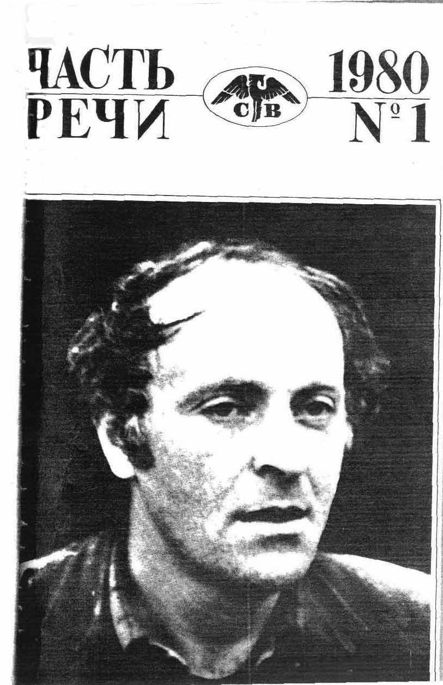
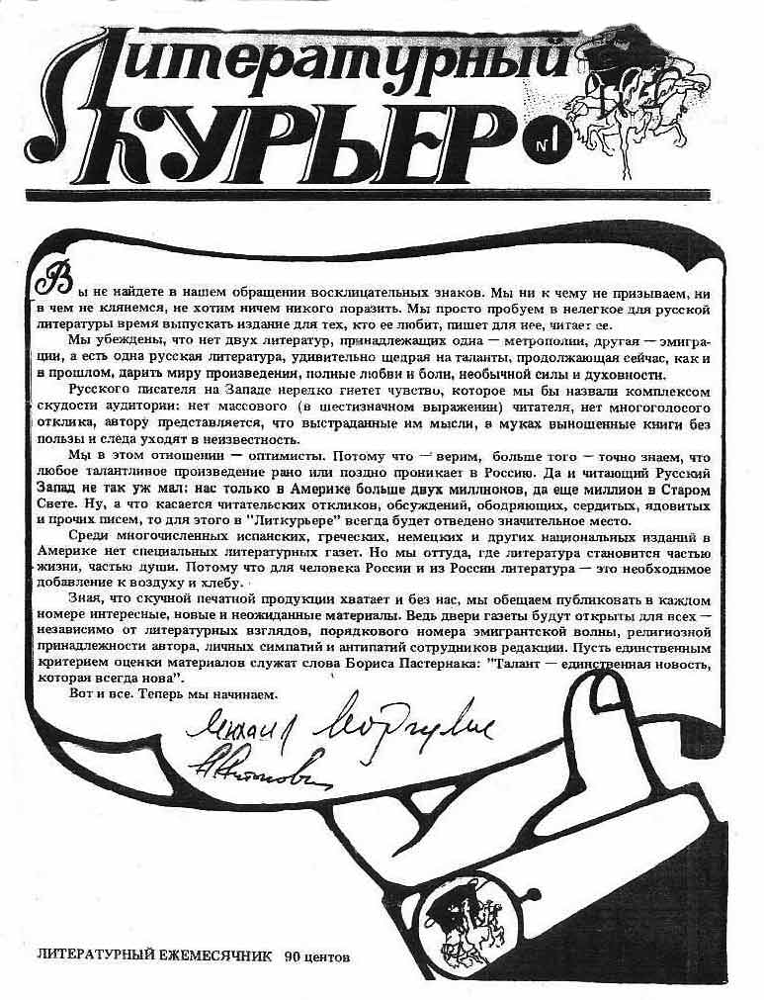
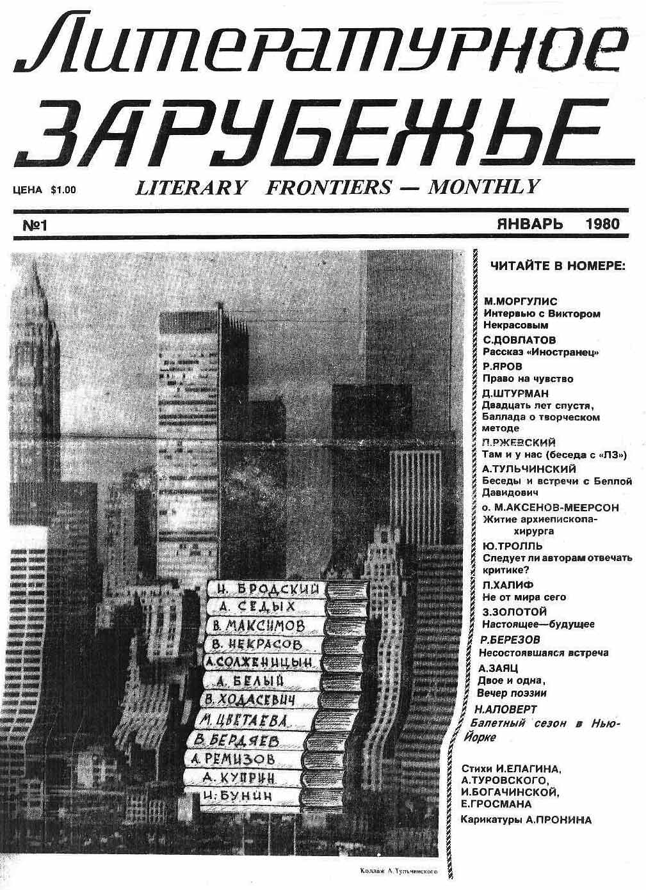
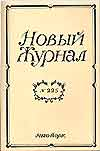
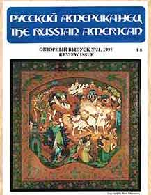
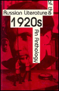
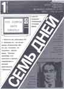
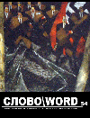
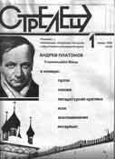

Journals of The Third Wave
Russians in America: The Third Wave
Journals
In 1981 and 1982 Abstracts of Soviet and East European Émigré Periodical Literature, which has become Зарубежная Периодическая Печать на Русском Языке: Ежеквартальный реферативный журнал listed over twenty Russian periodicals or newspapers published in the United States. The names below draw in part on that list. There is a website at the University of Minnesota that lists Russian serials in America. I provide a link to that site, but it extends only to 1979 and thus does not cover the most productive period of the Third Wave. Another invaluable resource is The Russian Emigration: Journals and Miscellanea 1981-1995. General Index of Articles. (Paris-Moscow, 2005). / Русская эмиграция. Журналы и сборники на русском языке 1981-1995. Сводный указатель статей.
Abstracts of Soviet and East European Émigré Periodical Literature.
Established in 1981 which has become Зарубежная Периодическая Печать на Русском Языке: Ежеквартальный реферативный журнал .
The only Jewish Monthly in Russian read worldwide published since 1981. It had survived into the new century. Sponsored by CHAMAH, a Jewish relief organization. [Some original copies are in Bremen].
Берег
Mentioned by Yevgeny Rubin (Евгений Рубин) in his book as publishing fifteen issues. Where is it? (p. 435).
Часть речи

NO. 1 (1980). Published by Silver Age Publishing. Editors include Vail' (Вайль), Genis (Генис), Dovlatov (Довлатов), Losev (Лосев), Gennadij Shmakov (Геннадий Шмаков) and Liudmila Shtern (Людмила Штерн). The editor-publisher was Grigory Poijak (Григорий Поляк). Opens with a poem by Brodsky from his cycle "Часть речи " which gives the journal its name. Poliak was the force behind the Silver Age Publishing House. His archives are now housed at Amherst.
Диаспора
Not actually a journal of the Third Wave, published since 1999 in Moscow. (At Princeton Vol. I is dated 2001. Paris, SPb). The journal does, however, document the emigration.
Двадцать два - 22
No 1 (1978) Tel-Aviv. By issue 17 (1981) editor in chief is R. Nudel'man (Р. Нудельман). In US representatives were L. Khotin (Л. Хотин) and Y. Levin (Ю. Левин, at University of Texas). The journal published among others: Mark Girshin (Марк Гиршин), Arkadij L'vov (Аркадий Львов), and Vadim Kreid (Вадим Крейд). [Bremen has a few issues].
Факты и мысли
1978-1980 No. 1-22. At Berkeley. Published by Russian Problems (154/156 Broome Street, NY NY 10002 212 677-7058). Issue 18 (March 1980), p. 12 The editors indicate financial hardship forcing it to go from a monthly to bi-monthly. The journal's recording secretary, Irina Rikter (Ирина Риктер), decries Russian nationalism. She argues for Ukrainian liberation. (This position was likely not popular in the larger Russian community).
Глагол
Published by Ardis, more an almanac than a journal. 1977- No. 1-3. 1-2. At Berkeley. NO 3 at Stanford. Middlebury has all three.
Glasnost: information bulletin/Гласность
A New York based magazine in English for whom Cathy Young translated articles. Published by Center for Democracy in Russia, editor Yuri Ageev (Ю. Агеев). Issue no. 1 (June 1987)-July/Sept. 1990.
Published: [New York, NY: Center for Democracy, 1987-1990. Irregular
Continued by Glasnost news & review. In English; translation from Russian.
Гнозис/Gnosis
Published by Arkady Rovner (Аркадий Ровнер), it had texts in Russian and sometimes English translation. ## 1-8, New York, 1978-1980. Green Library at Stanford has vols. 1-8.
Кадетская Перекличка/Cadets Roll Call
Периодический журнал Объединения Кадет Российских Кадетских Корпусов за Рубежом. Managing editor Nicholas Koziakin (Николай Козякин). Administrator Eugene Girs (Евгений Гирс), 85-89 88th Street, Woodhaven NY 11421. [Bremen has an issue NO 33 June 1983].
Хроника защиты прав в СССР
Edited and published by Valery Chalidze (Валерий Чалидзе). ## 1-42. New York. 1973-1982.
Хроника текущих событий/The Chronicle of Current Events
Published by Chalidze. ## 28-63. New York. 1973-1983. ???
Литературный Курьер / The Literary Courier

Edited Mikhail Morgulis (Михаил Моргулис). 1982-1983, No. 1-10. New York, then Chicago. (Green Library, Stanford; Bremen has a few issues). Литературный Курьер begins publication in January 1982 with issue NO. 1 (there is no actual date on the issue). The editor in chief was Morgulis and most of the original staff of Литературное Зарубежье joined him, including Julia Trioll, as Staff editor. Listed as The Literary Courier, 106 Rivington Street, New York, NY 10002 (212) 932-8266. Six issues are dated 1982. 1983 begins with No. 7 which announces the SUNY Stonebroke conference for April 8, 1983 on Russian Literature Today. No 8 reported on the conference, including the speech by Morgulis on pp. 2, 3, 22. BY issue No 10 the publication (along with Morgulis) had moved to Illinois. No 10 is normally listed as the final issue, but the jouranl was resurrected in 1986 for several additional numbers . Listen to an interview with Mikhail Morgulis in Russian about the journal."No. 1 {1982}, pp. 4, 5 6. "Кто мы такие: литературные записи." by Naum Korzhavin (Наум Коржавин).
No. 2 (12 January 1982). p. 1 Photo of Литературный вечер в Нью-Йорке " Present include N. Beljavina (Н. Белявина), I. Elagin (И. Елагин), N. Korzhavin (Н. Коржавин), M. Morgulis (М. Моргулис), L. Rzhevskii (Л. Ржевский), A. Sedykh (А. Седых), V. Sinkevich (В. Синкевич, of Philadelphia Enquirer). p. 9 article by L. Navrozov (Л. Наврозов), "Один к одному."
Литературное Зарубежье/ Literary Frontiers

Intended originally as a monthly the editorial board listed Professors Robert Belknap and Leonid Rzhevsky (Леонид Ржевский). From 1980-1982, No. 1-20 under the editorship of Mikhail Morgulis. Interview with Morgulis in Russian about the journal. Later it would be replaced by or superseded by Литературный Курьер. (Green Library, Stanford; Bremen has a few issues). The first issue was sixteen pages in newspaper like format. Vol. 1, p. 2 "В Америке людей из России достаточно, интерес к литературе велик, книг русских очень много, а газет и журналов явно недостаточно." The paper also reported on the Club of Russian Writers in New York(Клуб Русских Писателей в Нью-Йорке), and printed Dovlatov's Иностранец. It was clearly an attempt to establish an American version of Литературная Газета. It also announced the Almanakh-80 (Альманах 80) under the editorship of Viktor Urin (Виктор Урин). Vol. 9-10 a double issue, has an article by Eduard Shtein (Эдуард Штейн) "Если у тебя есть фонтан..." contains sharply critical reaction to the Almanakh-80. (Russian émigrés, at least from an American cultural perspective, lacked a sense of measure or civility in choosing to attack one another.} Issue 11-12. 1981 makes an attempt to organize a Русско-американская ассоциация писателей и художников. Did it ever emerge?By issue 15-16, 1981, 1981 the head editor is Pavel Leonidov (Павел Леонидов). Mikhail Morgulis had been let go at the end of 1980. Morgulis went on to edit Литературный курьер.
A curious bibliographical note. Some libraries list Литературный курьер as a continuation of Литературное зарубежье. This is not completely true, a statement published by Новое Русское Слово claims the demise of ЛЗ which actually continued issues 13-14, and 15-16 without Morgulis. The conflict is documented by Pavel Leonidov in issues 17-18 (1981).
By issue 19-20 January-February 1982, the issue is almost single-handedly put together by Leonidov and consisted of a diatribe against Sedykh (Седых) of НРС and Evgeny Rubin of Новая Газета.
Литературный Вестник
Литературный Вестник Клуба Русских Писателей. (August 1979). [Bremen]. [This first issue was a separate publication. Later it would be printed in Новая Газета.] The Literary Bulletin of the Russian Writers' Club. New York-Paris-Tel-Aviv. The first issue has a letter of greeting from Professor Robert Belknap of Columbia University (p.1). There are articles by E. Liubin (Е. Любин), poems by Aleksandr Galich (Александр Галич), Joseph Brodsky (Иосиф Бродский), Evgenia Dimer (Евгения Димер), Evgeny Liubin (Евгений Любин). Story of the founding of the club thanks to efforts by Liubin, Mark Popovsky (Марк Поповский), Aleksandr Skachinskii (Александр Скачинский), Garri Tabachnik (Гарри Табачник) and Prof. Belknap, and Andrei Sedykh (Андрей Седых) (p. 11).
Луч света
?????
Мир
A Philadelphia? Based weekly. Issue 104 (1984)-
Наши Вести
No 446/2747 March 1997 53rd year of publication. Russian Corps Combatants Inc., 388 Harvest Lane, Santa Rosa, CA 95401-9003 Ed N. Protopopoff (Н. Протопопов), Fax 707-542-0765 Since 1993 the printing of the journal was transferred to Russia. 1945-
НЕС
Независимый Еженедельник Jerusalem, Paris, NY 1983-1984 Numbers 1-50.
New American
Vol. I, No 1 (Jan-Feb, 1986). Touted as the America's only Russian-English Monthly Journal, Published by C.A.S.E. Committee on the Absorption of Soviet Émigrés. Chairman is Arthur Goldberg, editor in chief listed as Pamela Margoshes. (Some issues at Berkeley). There is a note that it had begun in 1980. This was a continuation in English and therefore a sign of changing times of the demise of Новый Американец.
Pamela Margoshes is quoted in an article in The New York Times bemoaning the demise of CASE in 1983. (It presumably continued). "AN OUTPOST OF ARTISTIC FREEDOM IS IN TROUBLE" NY Times.
June 26, 1983, Sunday By PAMELA MARGOSHES (NYT); New Jersey Weekly Desk
Late City Final Edition, Section 11, Page 24, Column 1, 1223 words
"A HUMAN rights/artistic freedom dream is about to die in Jersey City. The C.A.S.E. (Committee for the Absorption of Soviet Émigrés) Museum of Russian Contemporary Art in Exile, a museum that began with a whirl of publicity, a promising collection and the participation and encouragement of Congressmen, art critics and ..."
Нива
1 January 1979. Already publishing in 1978. Published by Pavel Vaulin (Павел Ваулин), NIVA, PO Box USA-1, Mobile AL 36688. No table of contents but imbued with the spirit of Russian Orthodoxy. Berkeley has a copy.

Новый Журнал
The major journal of the Russian emigration in the United States. Still publishing today. Begun in New York in 1942, it continues to publish today. Under the leadership of Roman Gul' (Роман Гуль) it was still a home in the 1980s for members of the so-called Second Wave. Roman Gul', editor of the journal for many of the first years of The Third wave cites with pride a number of writers who published in НЖ ,(Я унес Россию, Апология эмиграции. T. III: Россия и Америка (M: 2001), including Solzhenitsyn (Солженицын), V. Kreid (В. Крейд), D. Bobyshev (Д. Бобышев), A. Shepievker (А. Шепивкер), and others, but there is also a distinct lack of names such as Dovlatov (Довлатов), Aleshkovsky (Алешковский), Limonov (Лимонов), Sokolov (Соколов). The Third Wave found it hard to break into the established literary establishment, and because of alternative opportunities that abounded in the early 1980s were not hampered by their failure to grace the pages of Новый Журнал. Today the journal is edited by Marina Adamovich (Марина Адамович) and available on-line.
Память
The Memory, #1, 1978, New York Chalidze Publishers. Originally published in Samizdat, the editor, is N. Gorbanevskaja (Н. Горбаневская). [Not clear whether this was a journal or an almanac].
Петух
Edited by Vadim Konson (Вадим Конзон). ## 1-16. New York. 1982-1984.
Побережье
The Coast. Published in Philadelphia since 1992. See article in Russian and English.
Поиски
## 1-6. The first edition was published in the US in 1979 and then moved to Paris. 1979-1983. calling itself "Свободный Московский Журнал" this "samizdat" publication published first by Detinec at 4330 48th Street, Long Island City, NY 11104, describes in Issue I, 379-380 "Репрессии против журнала "Поиски" (University of Illinois has this journal.)
Православная Жизнь
1950-1991 Jordanville NY
Православный Путъ
1951-1991 Jordanville, NY
Путъ
Православный альманах. Ed Mixail Aksenov-Meerson. Christ the Savior Church 340 East 71 St, NY NY
Проблемы Восточной Европы
Edited by F. and L. Silnicky (Ф. и Л. Силницкие). ##1-8. New York. 1981-1984. One of the editorial collaborators was Boris Shragin (Борис Шрагин). Published by Chalidze Publications.

Русский Американец-Russian American
Published by Congress of Russian Americans (founded 1973). PO Box 8181 NYACK, NY 10960. K. Mikhailov (К. Михайлов), editor in chief in 1982. A review issue, NO 18 (1898201985) pp. 1-8 documents the organization's activities.
Родина
Published in New York from 11 (March 1951) to 263 (March 1982).
Родные Дали
A Russian language Bulletin [in Bremen] published by Alexander Doll (Долгополов) 1117 North Berendo Street, LA, CA 90029 tel. 662-7866 March 1980 issue is NO 312. Issue number 1 (April 1954) to issue 317 (October/November 1986).
Россия
In 1976 listed with circulation of 1650. George Alexandrovsky (Георгий Александровский) 216 W. 18th Street, NY NY 10011.
Россия вне России
Issue 1 (1982).

Russian Literature Triquarterly
Begun in 1971 by Carl and Ellendea Proffer of Ardis, the journal published translations, criticism, and original texts. The journal, while being primarily in English, devoted considerable attention in the 1970s to Nabokov and Brodsky. As émigré writers found other places to publish, including Ardis itself, the journal turned to writers such as Remizov (Ремизов) and Bulgakov (Булгаков).
Записки Российской Академической Группы в США
Transactions of the Association of Russian-American Scholars in the USA. For more about the group see. This journal publishes articles in both Russian and English.
Русский Голос
Viktor Yakhontoff (Виктор Яхонтов) 130 E 16th Street, NY NY 1003. Circulation in 1976 of 2584.
Русское Дело
Alexander Rummel (Александр Руммель), 349 W. 86th Street, NY NY Organ of Russian Immigrants Representative Association in America. Circulation in 1976 is 656.
Русское Возрождение
Ask N. Pervsuhin about it. Paris, Moscow, NY 1978-1991-

Семь ДнейA weekly supplement to Новое Русское Слово under the editors Genis and Vail'. New York. 1983-1984. Staff writers included Aleksandr Batchan (Александр Бачан), Aleksei Orlov (Алексей Орлов) and Leonid Sharol (Леонид Шароль). Published from 1 (November 4, 1983) to 56 (November 30, 1984).

Слово / Word
The journal Слово - Word published in New York over the past ten years lists on its editorial board among others, Larisa Shenker (Лариса Шенкер), Aleksandr Sumerkin (Александр Сумеркин), Mikhail Epstein (Михаил Эпштейн), Liudmila Shtern (Людмила Штерн). There is a record of a journal Slovo (Слово, The Word) that begins publishing in 1986 (7?) as the organ of the Cultural Center for Soviet Refugees from New York. Green Library in Stanford has the first issues. Larisa Shenker. Word/Slovo Publishers. 139 East 33rd Street, #9M. New York, NY 10016. 212 684-2356.
Согласие
Published in Los Angeles, dates back at least until 1960.
СССР Внутренние Противоречия
Ed. Valery Chalidze. ##1-16. New York, then Benson, VT. 1981-??
Страна и Мир
Kronid Ljubarskij. Ed. Boris Xazanov (Борис Хазанов). 1984-1992. See his book with John Glad. Допрос с пристрастием: литература изгнания (M:12001).

Стрелец
Monthly journal edited by Aleksandr Glezer (Александр Глезер). Jersey City, 1984-?. Published in large format this journal clearly deserves serious attention. It published among others Voinovich (Войнович), Aksyonov (Аксенов), Aleshkovskij (Алешковский).
Свет
Published in Brooklyn 1 (October 1981) to 31 (July/August 1986).
Свобода
????
Свободное Слово
Mt Vernon New York, beginning in 1981. Yearly No * (1988), No 9 (1989). Later continued by Свободное Слово России.
Свободный Мир
Edited Garri Tabachnik (Гарри Табачник) quarterly No1 (1985), (1988), No 9 (1989). Washington and Paris. (Copies in Bremen).
Точка Зрения
Eds. Nina Alovert (Нина Аловерт), Natal'ia Sharymova (Наталья Шаримова), Mariia Svan (Мария Сван). ## 1-3. New York. 1984. [A Woman's monthly magazine]. [Bremen has issue #1].
Tolstoy Foundation News/ Новости Толстовского Фонда
Circulation of 8000 in 1976.
Третья Волна
edited by Aleksandr Glezer (Александр Глезер). ## 1-19. Begins in Paris, then Jersey City. 1976-? Perhaps this journal gives the movement its name. It is a journal not only about those of the Third Wave, but by them.
Трибуна
New York, 1 (1983) -6 (may 1984).
Время и Мы
Edited Viktor Perel'man (Виктор Перельман). ## 1-90. Tel Aviv, then New York. 1975-
Зарубежная Русь
New York, 1978 was #5
Знамя России
Banner of Russia, 3544 Broadway, NY NY 10031 Circulation in 1976? is 1200.
Russian Serials from IHRC Russian American Periodicals
The Immigration History Research Center at the University of Minnesota lists the following Russian serials.
The Alaska Herald (previously titled Free Press and Alaska Herald), San Francisco, CA. Semi-monthly (weekly): 1868-1874. Includes English.
American Russian Cultural Association Annual Report, New York, NY. Annual: 1943-1947. English.
Американский Православный Вестник (Russian Orthodox American Messenger), New York, NY. Monthly: 1918. Includes some English.
The Archangel, Philadelphia, PA. Quarterly: 1952-1959, 1969. Includes English.
Association of Russian Imperial Officers in America Biulleten' (Бюллетень, Bulletin), New York, NY. Triennial: 1955-1956.
Belyi Lotos (Белый Лотос, White Lotus), Santa Barbara, CA. Bi-annual: 1959, 1962-1963.
Bich (Бич, The Whip; Humor Magazine), New York, NY. 1938.
D.P. Satirikon (Сатирикон), Augsburg, West Germany. Monthly (weekly): 1949-1950.
Delo Truda--Probuzhdenie (Дело Труда – Пробуждение, Cause of Labor--Awakening), New York, NY. Monthly (?): 1961.
Den' Russkago Rebenka (День Русского Ребенка, Day of the Russian Child), San Francisco, CA. Annual (?): 1954.
Detstvo vo Khriste (Детство во Христе, Childhood in Christ), Trenton, NJ. 1953-1954.
Dietstvo i Iunost' vo Khristie (Детство и Юность во Христе, Childhood and Youth in Christ), Mahopac, NY. Bi-monthly: 1955.
Edinaia Tserkov (Единая Церковь, One Church), New York, NY. Monthly: 1951-1954.
Eparkhial'niia Viedomosti (Епархиальные Ведомости, Diocesan Journal), New York, NY. Monthly: 1953-1954.
Evanhel'skii Vestnyk (Евангельский Вестник, Russian Gospel Messenger), Chicago, IL. Monthly: 1960.
Golos Truda (Голос Труда, The Voice of Labor), New York, NY. Monthly: 1911. Microfilm print copy.
Holy Trinity Monastery, Jordanville, NY. Frequency varies: one undated issue, 1956, 1963, 1965. Includes some English.
Iezhegodnik Pravoslovno Tserkvy v Amerike (Ежегодник Православного Труда в Америке, Annual of the Orthodox Church of America), Syosset, NY. Annual: 1975-1979.
Informatsiny Biulleten' Russkogo Emigrantskogo Lageria v Shlesgeme (Информационный Бюллетень Русского Эмигрантского Лагеря в Шлезгеме, Information Bulletin of the Russian Emigrant Camp in Schleissheim), Schleissheim, Germany. Weekly: 1947-1948.
Informatsionny Biulleten' (Информационный Бюллетень, Information Bulletin), Utica, NY. Annual: 1958, 1961-1963.
Kanadsky Pravoslavny Kalendar (Канадский Православный Календарь, Canadian Greek Orthodox Calendar; title change 1973: Pravoslavny Tserkovny Kalendar, Православный Церковный Календарь), Toronto, Ontario, Canada. Annual: 1954-1964, 1966, 1968-1972.
Klich K' Molodoj Rossii (Клич к Молодой России, Call to Young Russia), San Francisco, CA. Frequency varies: 1933-1934.
Koster Razvedchika (Костер Разведчика, Camp Fire Lighter), Oak Park, IL. Quarterly: 1964-1965, 1981.
Light of Orthodoxy, New York, NY. Monthly: 1953. English.
Luch (Луч, Ray), Iselin, NJ. Bi-monthly: 1960.
Medved' (Медведь, The Bear), Cleveland, OH. Monthly: 1958-1959.
Metropolia News (Official Acts of the Russian Orthodox Church of America), New York, NY. Bi-monthly: 1964. English.
Miloserdni Samarianin; Russki Zhurnal v Kanade (Милосердный Самаритянин; Русский Журнал в Канаде, Good Samaritan; Russian Journal in Canada), Lethbridge, Alberta, Canada. Monthly: 1954. Includes English.
Molokanskoe Obozrenie (Молоканское Обозрение, The Molokan Review; A Russian Molokan Annual Review), Los Angeles, CA. Annual: 1945, 1947, 1949. Includes English.
Morskiia Zapiski (Морские Записки, The Naval Records; The Association of Russian Imperial Naval Officers in America, Inc.), New York, NY. Quarterly: 1955-1956, 1958.
Return to Top
Moskva (Москва, Moscow), Chicago, IL. Monthly: 1930-1931.
Nash Put' (Наш Путь, Our Way), Chicago, IL. Monthly: 1950, 1952-1954.
Nashi Vesti (Наши Вести, Our News), New York, NY. Monthly: 1957-1965, 1967-1972.
Niva (Нива, Cornfield), New York, NY. Bi-monthly: 1954-1955.
Novaia Rossiia (Новая Россия, New Russia), Pittsburgh, PA. Bi-monthly: 1918.
Novy Golos (Новый Голос, New Herald), Chicago, IL. Monthly: 1951. Includes some English.
Novy Put' (Новый Путь, The New Road), New York, NY (previously published in Paris, France). 1947.
Novy Zhurnal (Новый Журнал, The New Review), New York, NY. Quarterly: 1942, 1944-1953, 1955-date. (Index: 1942-1970).
Obzor (Обзор, Digest; previously titled Obzor Inostranno Pechati, Обзор Иностранной Печати), Munich-Feldmoching, Germany. Weekly: 1948.
Obzor Russkoj Pechati (Обзор русской печати, The Russian Press Digest), New York, NY. Monthly: 1953, 1956.
One Church; Edinaia Tserkov (Единая Церковь), Youngstown, OH (previously published in New York, NY). Bi-monthly: 1952-1964, 1968-1980. English.
Opyt (Опыт, Experience), London, Ontario, Canada. Annual (?): 1984.
Opyty (Опыты, Experiences), New York, NY. Bi-annual: 1953-1958.
Orthodox Alaska, Kodiak, AK. Quarterly: 1979. English.
Orthodox Church in America Yearbook and Church Directory (previously titled Yearbook of the Russian Orthodox Greek Catholic Church in America), Syosset, NY. Annual: 1968-1973, 1975-1981. English.
Orthodox Education Day, Crestwood, NY. Annual: 1970-1972, 1977-1980. English.
The Orthodox Herald, Vestal, NY. Monthly: 1952-1985. English.
Orthodox Life, Jordanville, NY. Bi-monthly: 1950-date. English.
The Orthodox Word, Platina, CA (previously published in San Francisco, CA). Bi-monthly: 1965-date. English.
Pereklichka (Перекличка, Roll Call), New York, NY. Monthly: 1952-1954.
Po Stopam Khrista (По Стопам Христа, Following the Steps of Christ; Orthodox Quarterly), Berkeley, CA. Quarterly (monthly): 1950-1979.
Pravoslavnaia Rus'; Tserkovno-Obshchestvenny Organ (Православная Русь; Церковно-Общественный Орган, Orthodox Russia), Jordanville, NY. Bi-weekly: 1947-1948, 1951-date.
Pravoslavnaia Zhizn'; Ezhemiesiachnoe Prilozhenie k Zhurnalu (Православная Жизнь; Ежемесячное Дополнение к Журналу, Orthodox Life), Jordanville, NY. Monthly: 1950-date.
Pravoslavnoe Obozrienie; Periodicheski Zhurnal Russkoj Pravoslavno M'isli (Православное Обозрение; Периодический Журнал Русской Православной Мысли, Orthodox Observer) Montreal, Quebec, Canada. Frequency varies: 1968.
Pravoslavny Khristianski Viestnik' (Православный Христианский Вестник, Orthodox Christian Herald), Cleveland, OH. Monthly: 1925.
Pravoslavny Prikhodski Listok' (Православный Приходской Листок, Orthodox Parish Leaflet), New York, NY. Monthly: 1919.
Pravoslavny Put' (Православный Путь, The Orthodox Pathway; supplement to Pravoslavnaia Rus'), Jordanville, NY. Annual: 1950-1953, 1955-1976, 1978-1984.
Pravoslavny Tserkovny Kalendar' (Православный Церковный Календарь, Orthodox Church Calendar; previously titled Kanadskyi Pravoslavny Kalendar, Канадский Православный Календарь), Montreal, Quebec-Toronto, Ontario, Canada. Annual: 1973, 1975-1977.
Pravoslavny Tserkovny Kalendar (Православный Церковный Календарь, Orthodox Church Calendar), USSR. Annual: 1961, 1964.
Prizyv (Призыв, The Call), New York, NY. Monthly: 1950-1954.
Put'-ko-Khristu (Путь ко Христу, The Way to Christ), Winnipeg, Manitoba, Canada. Monthly: 1923.
Put' Pravdy (Путь Правды, The Way of Truth), Los Angeles, CA. 1954.
Revnitel' Pravoslaviia (Ревнитель Православия, Zealot of the Christian Orthodoxy), New York, NY. Semi-monthly: 1914-1915.
Rossiskaia Nezavisimost' (Российская Независимость, Russian Independence), Brooklyn, NY. Bi-weekly: 1963, 1964.
The Russian American, New York, NY. Frequency varies: 1976-1977, 1979-1985. English.
Russian Immigrants' Representative Association in America Information Bulletin, New York, NY. Monthly: 1958.
Russian National Society Bulletin, Columbus, NY. Weekly: 1921. English.
Russian Orthodox American Messenger (supplement to Amerikanski Pravoslavny Viestnik, Американский Православный Вестник), New York, NY. Monthly: 1902. English.
Russian Orthodox Catholic Church Yearbook, New York, NY. Annual: 1953-1954. Includes English.
Russian Orthodox Catholic Mutual Aid Society of U.S.A. Convention Reports, Wilkes-Barre, PA. Frequency varies: 1934, 1938, 1942, 1946, 1950, 1954, 1958. Includes English.
Russian Orthodox Church of Christ the Savior Parish Bulletin, New York, NY. Monthly: 1949.
Russian Orthodox Greek Catholic Church of America Yearbook and Church Directory, New York, NY. Annual: 1951-1954, 1956, 1958, 1960, 1962-1965, 1967. English.
Russian Orthodox Journal, Donora, PA (place of publication varies). Monthly (bi-monthly January-February and July-August): 1930-1984. English.
Russki Amerikanets (Русский Американец, The Russian American), Long Island City, NY. Frequency varies: 1975-1976. Includes English.
Russki Kalendar (Русский Календарь, Russian Calendar), New York, NY. Annual: 1965.
Russki Nastol'ni Kalendar--Spravochnik (Русский Настольный Календарь, Russian Desk Calendar--Reference Book), New York, NY. Annual: 1952, 1955, 1960, 1964, 1966.
Russki Pravoslavny Kalendar i Bogosluzhebnyia Ukazaniia (Русский Православный Календарь и Богослужебные Указания, Russian Orthodox Calendar and Divine Service Instructions), New York, NY. Annual: 1959.
Russki Vestnik (Русский Вестник, Russian Herald), New York, NY. Monthly: 1938-1942, 1947-1948, 1955, 1959-1961. Includes English.
Russko-Amerikanski Pravoslavni Kalendar (Русско-Американский Православный Календарь, Russian American Orthodox Calendar; previously titled Pravoslavny Russko-Amerikanski Kalendar, Православный Русско-Американский Календарь), Wilkes-Barre, PA. Annual: 1902, 1910, 1912-1917, 1921-1923, 1925-1927, 1929-1930, 1932-1933, 1936-1937, 1947, 1950. Includes English.
Russko-Amerikanski Pravoslavni'i Viestnik (Русско-Американский Православный Вестник, The Russian American Orthodox Messenger), Sea Cliff, Long Island, NY. Monthly: 1938-1954, 1963-1964, 1966.
Russkoe Delo (Русское Дело, Russian Cause), New York, NY. Monthly: 1959-1962, 1965-1967, 1970, 1972.
Russkoe Natsional'noe Obshchestvo. Biuleten' (Русское Национальное Общество. Бюллетень. The Russian National Society. Bulletin), New York, NY. Weekly: 1921.
Russkoe Obozrenie (Русское Обозрение, Russian Review), Chicago, IL. Monthly: 1929. Includes some English.
Russkoe Studencheskoe Khristianskoe Dvizhenie (Русское Студенческое Христианское Движение, The Russian Student Christian Movement; previously titled Viestnik Russkago Studencheskago Khrystyianskago Dvizheniia, Вестник Русского Студенческого Христианского Движения), Paris, France. Quarterly (monthly). (Microfilm: 1926-1936).
Russkoe Studencheskoe Khristianskoe Dvizhenie. Vestnik (Русское Студенческое Христианское Движение. Вестник, The Russian Student Christian Movement. Messenger), New York, NY-Paris, France. Quarterly: 1962-1963.
St. Herman Orthodox Calendar, Platina, CA. Annual: 1978. English
St. John's Russian Orthodox Church Yearbook, Passaic, NJ. Annual: 1938-1939. Includes English.
St. Mary's Russian Orthodox Church Bulletin, Minneapolis, MN. Monthly: 1952-1960, 1962-1963. English.
St. Vladimir's Orthodox Theological Seminary Newsletter, Crestwood, NY. Semi-annual: 1963-1964. English.
St. Vladimir's Theological Quarterly, Tuckahoe, NY. Quarterly: 1952-1954, 1957-1964, 1969-date. English.
Seiatel' Istin'i (Сеятель Истины, The Sower of Truth; A Russian Christian Monthly), Ashford, CT (previously published in Hartford, CT). Monthly (except July): 1955, 1967-1968.
Skautënik; Zhurnal Ptenchikov i Volchat San Frantsiissko Druzhiny NORS-R (Скаутёнок; Журнал Птенчиков и Волчат Сан-Францискской Дружины NORS-R, The Scout; Magazine of the San Francisco Troop Birds and Wolves of NORS-R), San Francisco, CA. Frequency varies: 1963-1965.
Soglasie (Согласие, Agreement), Los Angeles, CA. Monthly: 1954, 1956-1960, 1973, 1976.
Staroe Vremia; Literaturno-Istoricheskie Tetradi (Старое Время, Литературно-Исторические Тетради, Old Times; Literary-Historical Notebooks), New York, NY. Quarterly: 1954.
Strannik; Ofitsial'ni Organ Russkoho Otdela Sobrani Bozhiikh (Странник; Официальный Орган Русского Отдела Собраний Божьих, Pilgrim; Official Organ of the Russian Division of the Assemblies of God), Garfield, NJ. Quarterly: 1956.
Svobodnaia Rossiia (Свободная Россия, Free Russia), Los Angeles, CA. Bi-monthly: 1955.
Svobodnye Slovo (Свободное Слово, The Free Word), New York, NY. Monthly: 1915-1916.
The Tikhonaire, South Canaan, PA. Annual: 1957, 1960, 1963-1965, 1968, 1970, 1974, 1976-1979. English.
Tovarishch' Russkago Immigranta v' Amerikie (Товарищ Русского Иммигранта в Америке, Friend of the Russian Immigrant in America), New York, NY. Annual: 1913.
Troitski Pravoslavni Russki Kalendar (Троицкий Православный Русский Календарь, Trinity Orthodox Russian Calendar), Jordanville, NY. Annual: 1951-1966.
Vechnaia Rossiia (Вечная Россия, Eternal Russia), New York, NY. Frequency varies: 1962.
Vera i Znanie (Вера и Знание, Faith and Knowledge), Kingston, NY. 1951.
Vestnik Pervoprokhodnika (Вестник Первопроходника, Society of First Campaign Combatants), Los Angeles, CA. Monthly: 1963, 1967-1970, 1975-1976.
Viestnik' Obshchestva Russkikh' Veteranov' Veliko Vony (Вестник Общества Русских Ветеранов Великой Войны, Messenger of the Russian Veterans of World War I), San Francisco, CA. Frequency varies: 1926-1965.
Vpered (Вперед, Forward), San Francisco, CA. Monthly: 1959-1960.
Za Svobodu (За Свободу, For Freedom), New York, NY. Frequency varies (monthly through 1943): 1941-1943, 1945-1947.
Za Vashu i Nashu Svobodu. Biuleten' (За Вашу и Нашу Свободу. Бюллетень, For Your and Our Freedom. Bulletin), U.S.A.-Canada. Frequency varies: 1965.
Zhar-Ptitsa; Ezhemiesiachnyi Literaturno-Khudozhestvenny Zhurnal (Жар-Птица; Ежемесячный Литературно-Художественный Журнал, Firebird; Monthly Literary and Arts Magazine), San Francisco, CA. Monthly: 1952-1959.
Zlatotsviet; Ezhemiesiachny Literaturno-Khudozhestvenny Zhurnal (Златоцвет; Ежемесячный Литературно-Художественный Журнал, Asphodel; Monthly Literary and Arts Magazine), Burlingame, CA. Monthly: 1962.
Znamia Rossii (Знамя России, The Banner of Russia), New York, NY. Monthly: 1953-1954, 1959-1970, 1972-1973.
European and Israeli Journals
Many of the Russian writers living in the United States published frequently in the leading European journals of the emigration. They too must be considered at some level, for the writers of the emigration once outside the Soviet Union recognized no political or geographical boundaries. Some of the key journals included.
Часовой
Paris 1929-1988.
Эхо
Эхо. Литературный Журнал #1 1978. Edited by Vladimir Maksimov (Владимир Максимов) and Aleksej Xvostenko (Алексей Хвостенко). p. 3 the new editors comment" "Журнал (и все тягости, с ним связанные) предпринят нами исключительно оттого, что мы все переполнены рукописями--в основном из России. Рукописей много, русских изданий недостаточно." The issue published poems by Brodsky and material by Dovlatov, Limonov and Vagrich Baxchanian (Вагрих Бахчанян). Issue #4, 1978, pp. 118-126 has reactions to Limonov's publication in issue #3 of Секретарная тетрадь, или Дневник неудачника " by Dovlatov, Glezer, and Losev.
Грани
It had begun in 1946. In 1980 the editor in chief was N. Tarasova (Н. Тарасова). The publishing house continued to publish pocket sized copies of Russian works to be smuggled back into the Soviet Union. It also cites an interesting article on Metropol' in Grani, XXXV, #118 (1980), pp. 131-157.
Форум
Общественно политический Журнал. #1 (1982) - 1990. Munich. [in Bremen]. Ed by Vladimir Malinkovich (Владимир Маленкович). Contains an open letter of criticism of Континент. (Malinkovich had apparently been associated with t hat journal in its beginning years.
Континент
#1 (1974). Maksimov lives in Paris, Journal published by Ulstein Verlag in Berlin. p. 4 "...художественная литература, идущая в разрез идеологическим установками правящего аппарата, преследуется как уголовное преступление... .за книгу ссылают, как Иосифа Бродского, за книгу годами гонят в лагерях, как Андрея Синявского, за книгу запирают в сумасшедший дом, как Михаила Нарицу ..." P. 403 in same issue in his own Колонка реактора, Maksimov writes of Viktor Nekrasov (Виктор Некрасов): "Но ни он, никто другой из нас не покинули родину, родину мы привели сюда, с собой, в своей душе и в своем сердце. И она никогда не покинет нас, ибо мы остались верны ей до конца в самом высоком, смысле этого слова."
" 23 (1980). Article by Maksimov, "Они и мы," pp. 15-64, will give rise to a controversy. Viktor Nekrasov is editor at this time and publishing has been taken over by A. Neimanis (А. Нейманис) Buchvertrieb, Munich. Bauerrstrasse 28, Munich.
Today Kontinent is published in Paris-Moscow. The editorial board includes Marina Adamovich (Марина Адамович), Vasily Aksyonov (Василий Аксенов), Fazil Iskander (Фазиль Искандер), Naum Korzhavin (Наум Коржавин), Robert Conquest, Ernst Neizvestny (Эрнст Неизвестный), Georges Nivat.
Минувшее I
The original was begun and edited in 1986 by Vladimir Alloi. Issue 25 (1999) last one has index of previous issues. An electronic index is also available. See article by Alloi "Записки аутсайдера" #21, 1997 (pp. 104-152). and #22 (1997), 112-161.
Alloi will continue with a journal published inside Russia, Diaspora.
Мосты
Надежда
1977-1988 Frankfurt am Main
Народ и Земля: Журнал Еврейской Культуры.
Jerusalem 1984-1985.
Посев
XXXVII, 1(1284) (January, 1981). Monthly since 1945 thru 1991. Since 1976 a small version in pocket format for importing into Soviet Union had been published. Editor is Ja. Trushnovich (Я. Трушнович). Frankfurt, Fluscheidenweg 15. Note there is also a Вольное слово, a quarterly supplement to Posev.
Синтаксис
Paris editors M. Rozanova (М. Розанова) and A. Sinyavskij (А. Синявский). The entire run of the journal is now available electronically.
Современник
Toronto 1960-1980.
Страна и Мир
No 1-2 (1984). Das Land und die Welt (Munich) editors Kronid Ljubarskij (Хронид Любарский), Boris Xazanov (Борис Хазанов), Sergej Maksudov (Сергей Максудов). Existed until 1992. (ends with issue 12). Calling itself "общественно-политический журнал."
Вече
Munich 1981-1991
Вольное Слово
Frankfurt 1972-1981
No work to my knowledge has explored the rich material in the "thick journals" of the emigration. Brodsky considered them an essential page in Russian literature. One exception is the study by Anna Shcherbakova (Vassilieva; Анна Щербакова (Васильева) of the Monterrey Institute of Foreign Studies, in her Российская эмигрантская пресса о России: 80-90 гг. (M: 1994).
Here is a link to Russian language journals currently published online.
Who, What, Where and When?
Internet Links
Другие Ссылки